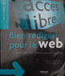
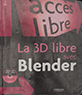
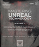
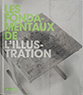
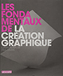

Liste des livres
-


Icon Handbook
Jon Hicks

Have you ever needed to create an icon for something and not known where to start? How do you go about crafting the right message, the tone, the line work and getting it to work in the environment it's supposed to; be it mobile, operating system, or browser. Thankfully we now have the place to go.
Jon Hicks' 'The Icon Handbook' will become the go-to book for the modern designer; for uncovering the thought processes, the skills and the reference for designing your own icons.
This book is aimed at designers who already have basic vector and bitmap drawing skills. It could be that you want to create a simple, unique favicon, or perhaps you've been asked to work on a mobile app that requires them. It starts at the basics and takes you right the way through to being able to create stunning iconography.
-

Visual Complexity
Mapping Patterns of Informations
Manuel Lima
Manuel Lima's smash hit Visual Complexity is now available in paperback. This groundbreaking 2011 book—the first to combine a thorough history of information visualization with a detailed look at today's most innovative applications—clearly illustrates why making meaningful connections inside complex data networks has emerged as one of the biggest challenges in twenty-first-century design. From diagramming networks of friends on Facebook to depicting interactions among proteins in a human cell, Visual Complexity presents one hundred of the most interesting examples of informationvisualization by the field's leading practitioners.
-
Word Press
Francis Chouquet / Amaury Balmer / Xavier Borderie
Vous souhaitez créer, personnaliser et gérer facilement l'ensemble d'un blog, ou même d'un site? WordPress est le nec plus ultra des plates-formes de publication personnelle, alliant esthétique, standards du Web et utilisabilité. Système de gestion de contenus (CMS) gratuit et open-source, il est l'un des outils de blog les plus populaires et fait tourner à ce jour près de 6 millions de sites web. Ce livre, le premier en français sur WordPress, est un véritable guide de référence, qui va vous faire entrer de plain-pied dans la communauté des utilisateurs aguerris en vous livrant l'ensemble des informations nécessaires et utiles pour comprendre et utiliser ce CMS. Écrit par trois personnalités de la communauté francophone et internationale de WordPress, cet ouvrage couvre tout ce dont les utilisateurs peuvent avoir besoin pour tirer pleinement profit de ce logiciel. Les débutants pourront construire un blog riche et personnel, et les lecteurs plus expérimentés approfondiront leurs connaissances techniques pour concevoir thèmes et extensions mais aussi gérer un hébergement de blog complet avec WordPress MU. Vous détiendrez alors toutes les clés pour prendre entièrement en main votre blog. Avec un préambule de Michel Valdrighi, créateur du projet b2 à l'origine de WordPress et une préface de Matt Mullenweg, fondateur du projet WordPress! Offert! Un CD-ROM contenant WordPress 2.7, les fichiers d'exemples pour mieux suivre les procédures décrites dans certains chapitres, un panel de thèmes correspondant à différents types de blogs et toutes les extensions nécessaires pour tirer profit au mieux de son blog WordPress.
-

Reload
Patrick Burgoyne / Liz Faber / Laurence King
Following the quick sellout of the 1998 edition, The Internet Design Project moves from a straightforward presentation of great sites to the inner workings of the internet. Highlighting some of the best online environments developed in the last year, this volume documents the movement of online design from mere 'eye-candy' towards more sophisticated environments. Like its predecessor, The Internet Design Project includes a wide range of sites and, in addition, features case studies such as John K's (creator of Ren and Stimpy) Spumco site which broadcasts animation on the web. Patrick Burgoyne is the Editor of Creative Review, the leading monthly magazine for the communication arts. He has published two books on design, Bored: Surf/Skate/Snow Graphics and FC Football Graphics. Liz Faber is a CD-Rom producer and writer for Creative Review magazine. Her previous books include The Internet Design Project (with Patrick Burgoyne) and Re:play: Ultimate Games Graphics. Following the quick sellout of the 1998 edition, The Internet Design Project moves from a straightforward presentation of great sites to the inner workings of the internet. Highlighting some of the best online environments developed in the last year, this volume documents the movement of online design from mere 'eye-candy' towards more sophisticated environments. Like its predecessor, The Internet Design Project includes a wide range of sites and, in addition, features case studies such as John K's (creator of Ren and Stimpy) Spumco site which broadcasts animation on the web. Patrick Burgoyne is the Editor of Creative Review, the leading monthly magazine for the communication arts. He has published two books on design, Bored: Surf/Skate/Snow Graphics and FC Football Graphics. Liz Faber is a CD-Rom producer and writer for Creative Review magazine. Her previous books include The Internet Design Project (with Patrick Burgoyne) and Re:play: Ultimate Games Graphics.
-

Web Culture
Encyclopédie
Titiou Lecoq / Diane Lisarelli
Alors que l'usage d'Internet s'est généralisé, qu'il est aussi bien utilisé pour réserver un billet de train que pour organiser une révolution, aucun ouvrage ne s'est encore intéressé à ce qui fait la spécificité de la webculture. A travers une centaine d'entrées incontournables, l'Encyclopédie de la webculture retrace dix ans d'histoire du Web, ses évolutions les plus importantes, les nouvelles pratiques qui ont émergé et, en filigrane, la culture qui en est issue. Parce que au-delà du medium technique, Internet est surtout un nouveau monde, que nous connaissons de façon autodidacte et forcément parcellaire. Pour la première fois, un livre donne accès à une compréhension globale du Web, de ses usages politiques, criminels, culturels, pratiques... Il donne les meilleures adresses du moment, tout en tentant d'apporter des réponses à quelques questions de fond : Qu'est-ce que Facebook a changé dans nos vies ? Qui sont les ennemis de l'Internet ? Comment Hitler est-il devenu une figure emblématique de l'humour sur Internet ? Les skyblogs sont-ils la plaie du Web ? Votre adolescent est-il un kikoolol ? Comment devenir populaire sur le Web ?
-

PHP5 MySQL5 AJAX
Brice-Arnaud Guérin
Ce livre sur PHP, MySQL, Ajax vous permettra de maîtriser le développement de puissantes applications professionnelles. Vous vous exercerez sur les aspects techniques mais aussi sur la conception d’architectures réutilisables et performantes. Le premier chapitre consolide vos connaissances sur le langage PHP 5, son modèle objet, la gestion des exceptions et les itérateurs. Vous aurez l’occasion, au cours du deuxième chapitre, d’expérimenter l’architecture MVC pour PHP ainsi qu’un framework AJAX. Les deux chapitres suivants traitent de l’administration de MySQL 5 et de l’accès aux données, avec notamment la mise en oeuvre de procédures stockées et de transactions. Le chapitre 5 montre au travers d’un système de panier électronique comment gérer les sessions dans PHP, avec ou sans cookies. Les chapitres 6 et 7 abordent des fonctions avancées du développement LAMP, telles que les services Web, le traitement d’images ou la création d’états PDF. Le dernier chapitre est une synthèse de l’ensemble des techniques abordées par le livre et développe un site de messagerie instantanée basé sur AJAX. Les éléments nécessaires à la réalisation des exercices sont en téléchargement sur le site de l’éditeur (www.editions-eni.fr/livres). Pour les apports théoriques sur ce sujet, Editions ENI édite dans la collection Ressources Informatiques, des ouvrages sur PHP, sur MySQL ou sur Ajax.
-

Bien rédiger pour le web
Stratégie de contenu pour son référencement
Olivier Andrieu / Sébastien Billard
Le contenu, clef de voûte d'un référencement durable. Au-delà du graphisme et des prouesses techniques, c'est le contenu d'un site web qui fait la différence - avant tout, c'est pour lui que vient l'internaute. Pertinent, bien écrit et bien construit, un site gagnera une visibilité méritée sur les moteurs de recherche. C'est en véritable stratège que le chargé du contenu - bien plus qu'un rédacteur - en fera la force de frappe de son site ! Des contenus efficaces pour vos visiteurs comme pour les moteurs de recherche ! Comprenez ce que votre internaute vient chercher et appropriez-vous les principes d'ergonomie et d'accessibilité. Découvrez les bases et les techniques du référencement. Soignez l'architecture de l'information pour faciliter la navigation et favorisez la lisibilité. Travaillez votre texte et sachez utiliser à bon escient image et multimédia pour séduire et retenir l'internaute. Choisissez et placez bien vos mots-clés. Exploitez les balises et attributs (titres, liens, métadonnées) pour capter l'attention et améliorer te référencement. Optimisez tous types de contenus (Web mobile, tweets, vidéo, newsletter, blog, fiche Google Adresses, PDF). Mesurez votre audience grâce aux Web Analytics et adaptez votre stratégie en conséquence. Apprenez à mettre au point et formaliser votre stratégie avec des outils concrets pour valoriser vos contenus. A qui s'adresse cet ouvrage ? Aux rédacteurs et chargés de contenu web. Aux chefs de projet, architectes de l'information, référenceurs et tout responsable de site web (y compris les décideurs et chefs d'entreprise). Aux agences web, responsables de communication et chargés de marketing.
-

Beginning HTML5 and CSS3
The Web Evolved
Christopher Murphy / Richard Clark / Olvier Stuholme / Divya Manian
Beginning HTML5 and CSS3 is your introduction to the new features and elements of HTML5 all the leaner, cleaner, and more efficient code you've hoped for is available now with HTML5, along with some new tools that will allow you to create more meaningful and richer content. For everyone involved in web design, this book also introduces the new structural integrity and styling flexibility of CSS 3 which means better-looking pages and smarter content in your website projects. For all forward-looking web professionals who want to start enjoying and deploying the new HTML5 and CSS3 features right away, this book provides you with an in-depth look at the new capabilities including audio and video that are new to web standards. You'll learn about the new HTML5 structural sections, plus HTML5 and CSS3 layouts. You'll also discover why some people think HTML5 is going to be a Flash killer, when you see how to create transitions and animations with these new technologies. So get ahead in your web development through the practical, step-by-step approaches offered to you in Beginning HTML5 and CSS3. What you'll learn Cutting-edge web development techniques with HTML5 and CSS3 The new features of HTML5 and how to work with HTML5 and CSS3 The new web standards being implemented by all the major web browsers How to work with the new HTML5 structural sections How to create HTML5 and CSS3 layouts How to create transitions and animations without using Flash New web typography solutions A new vision of web development with HTML5 and CSS3 Who this book is for This book is for web developers and anyone involved in web design who wants to embrace the new web standards and cutting-edge features of HTML5 and CSS3. With a practical, accessible approach, this book is for anyone who wants to push their websites forwards with the latest technologies. Table of Contents HTML5: Now, Not 2022 Your First Plunge Into HTML5 New Structural Element.
-

Flash Cinématic Technique
Chris Jackson
Apply universally accepted cinematic techniques to your Flash projects to improve the storytelling quotient in your entertainment, advertising (branding), and educational media. A defined focus on the concepts and techniques for production from story reels to the final project delivers valuable insights, time-saving practical tips, and hands-on techniques for great visual stories. Extensive illustration, step-by-step instruction, and practical exercises provide a hands-on perspective. Explore the concepts and principles of visual components used in stories so you are fluent in the use of space, line, color, and movement in communicating emotion and meaning. Apply traditional cinematography techniques into the Flash workspace with virtual camera movements, simulated 3d spaces, lighting techniques, and character animation. Add interactivity using ActionScript to enhance audience participation.
-

Google à 200%
100 techniques pour optimiser vos recherches
Tara Calishain / Real Dornfest
Google est le moteur de recherche web le plus puissant à l'heure actuelle. Ses possibilités sont telles qu'il est devenu la référence incontournable en matière d'indexation de sites internet. Non content d'être performant, simple à utiliser et populaire, Google comporte bien des secrets pour qui veut aller plus loin dans ses recherches. Avec son interface hautement personnalisable, vous aurez accès à des ressources insoupçonnées. Cette seconde édition de Google à 200 % met l'accent sur les nouveaux services de Google et s'adresse à tous ceux qui passent une bonne partie de leur temps à effectuer des recherches sur Internet et plus particulièrement aux étudiants, documentalistes et webmasters. Vous pourrez ainsi améliorer grandement votre méthode de recherche sur Internet, trier les informations selon vos critères et automatiser certaines tâches. Grâce à son interface de programmation (API), Google peut effectuer des recherches encore plus complexes, que vous soyez développeur averti ou simplement curieux, en réutilisant les codes fournis prêts à l'emploi. Google à 200 % seconde édition est un recueil de 100 trucs, secrets et techniques, patiemment mis au jour par des utilisateurs chevronnés ainsi que des développeurs motivés par les possibilités infinies offertes par l'API de Google. Chaque fiche contient un pack, une clé rapide et simple à mettre en oeuvre pour gagner un temps précieux lors de vos recherches. Cet ouvrage contient des dizaines de scripts qui vous permettront de personnaliser Google en fonction de vos besoins. Vous serez impressionné de voir tout ce que vous pouvez faire avec Google : Filtrer les résultats en utilisant quelques termes syntaxiques en plus de vos mots-clés ; Découvrir et exploiter les possibilités des services de Google : les images, les actualités, les groupes de discussion ; Automatiser vos recherches selon vos propres critères ; Explorer les aspects les plus loufoques de Google ; Manipuler l'API de Google avec divers langages comme XML, PFIP, Python, Perl, C# et NET ; Vous servir des services tiers pour décupler la puissance de recherche de Google ; Faire recenser votre page et tirer parti des avantages de Google pour vous faire connaître sur le Web ; Découvrir toutes les fonctions de Ginail et en faire un disque dur distant ; Envoyer des requêtes Google depuis n'importe où avec un téléphone portable ou un PDA ; Faire de la cartographie avec Google ; Demander à Google de vous faire des revues de presse.
-

Illustrator CS2
Pour Mac et PC
Pierre Labbe
Véritable bible de conseils pratiques et d'astuces de travail, ce livre richement illustré dresse un panorama complet d'lllustrator CS2, avec à l'appui une multitude d'exemples concrets. Toutes les fonctions du logiciel y sont développées, avec une attention particulière pour les trois nouveaux outils majeurs que sont la palette Contrôle, la vectorisation dynamique et la peinture dynamique. Exhaustif et didactique, cet ouvrage conduira le lecteur de la prise en main d'lllustrator jusqu'à la maîtrise des techniques les plus pointues. Il constituera un excellent manuel d'apprentissage pour les débutants en dessin vectoriel comme pour les professionnels.
-

Web Design
Before & After
Richard Wagner
- Through stunning four-color images that demonstrate how nondescript "before" situations gradually become astonishing "after" results, this book offers readers simple steps to achieve unique outcomes
- Readers learn how to incorporate the latest Web-building techniques on their sites, redesign a site for optimum usability, limit user bandwidth needs, keep user experience consistent with CSS, and manage content
- The medley of makeovers includes: full-site makeovers (user speed, color themes, improved accessibility), page makeovers (page sizing, working with tables), text makeovers (font selection, graphic alternatives), image makeovers (incorporating text with images, file sizing), navigation makeovers (improving navigation bars, menu additions), content makeovers (better Web writing, enhancing the home page message), and an extreme makeover (combining several smaller makeovers into a major site overhaul).
-

Les jeux vidéo
À la recherche d'un monde meilleur
Jean-Paul Lafrance
Le phénomène d'engouement des jeux vidéo chez les jeunes a de quoi intriguer bien des parents, des éducateurs et des politiciens. Pourtant ce phénomène n'est pas nouveau, il date maintenant de trente ans. Si la plupart des adultes n'y comprenaient rien, les économistes en ont tenu compte à partir du moment où le chiffre d'affaires de cette industrie a dépassé le milliard de dollars (vers 1980). Le but de cet ouvrage est de comprendre ce qu'est le jeu et s'appuie sur deux types de sources : une enquête d'envergure de types quantitatif et qualitatif de la Chaire UNESCO-BELL réalisée au Canada qui permet de dessiner un portrait du joueur et d'étudier les caractéristiques sociodémographiques des joueurs et des non-joueurs, des textes philosophiques qui donnent une définition du jeu et étudient les mécanismes de fonctionnement de l'activité ludique. Ce livre dresse une histoire des jeux vidéo et montre leur impact au niveau économique et sociologique à l'heure où ils dominent de plus en plus l'industrie culturelle.
-

Concevoir un jeux vidéo
Marc Albinet
Ce guide pratique explique tout ce que vous devez savoir pour élaborer un jeu vidéo. Il offre une synthèse de toutes les connaissances dans ce domaine et propose une méthode efficace qui répond aux questions essentielles que se pose tout créateur de « game concept ». Il traite l ensemble des aspects de la conception et fournit une information complète sur les outils actuels utilisés par les grands studios et éditeurs afin que le lecteur puisse s en servir, quels que soient le genre et l envergure du jeu qu il souhaite créer. Concevoir un jeu vidéo rend ce savoir-faire professionnel compréhensible et utilisable par tous : passionnés, étudiants, spécialistes des jeux et des nouveaux médias, innovateurs ou responsables dans une entreprise ou une organisation qui souhaitent développer un jeu vidéo ou un serious game. Cette seconde édition met à la disposition du lecteur tous les savoirs essentiels sur la manière de créer des jeux sur consoles, ordinateurs, téléphones mobiles, tablettes et réseaux sociaux, en tenant compte des spécificités de chaque support.
-

Rogue leaders
The story of Lucasarts
Rob Smith / George Lucas
In 1982, George Lucas saw potential in the fledgling videogame industry and created his own interactive-entertainment company. Twenty-five years and dozens of award-winning games later, LucasArts has earned a prestigious place in the industry and in the hearts of gamers everywhere. Rogue Leaders is the first substantive survey of a videogame company a deluxe compilation that traces its history through never-before-published interviews. In addition, more than 300 pieces of concept art, character development sketches, and storyboards have been lavishly reproduced to showcase the creative talent behind such videogame classics as The Secret of Monkey Island, Grim Fandango, and Star Wars: Knights of the Old Republic, as well as games that were never publicly released. A thrill for millions of videogame and LucasArts fans around the world.
-

Pix'n Love n°16
Pix'n Love Editions
CADEAU ! UN DVD INEDIT DU JOUEUR DU GRENIER (spécialement réalisé pour Pix'n Love 16) Retrouvez tout l'univers du rétrogaming micro, consoles et arcade avec Pix'n Love #16, un numéro acidulé et intrépide qui vous fera perdre la boule ! Rémi Herbulot nous dévoile en effet les coulisses d'un des plus emblématiques jeux de flipper sur micro : Macadam Bumper ! Ce numéro pas comme les autres est également l'occasion de vous faire découvrir ces nombreuses petites pépites cacaotées restées dans l'ombre ou simplement avortées : Spellsinger, Lightquest, Bound Hing, I Robot, Boxing Bugs and co.
-
Pix'n Love n°19
Pix'n Love Editions
La scéance est ouverte. Installez-vous confortablement dans votre canapé et savourez ce nouveau numéro de Pix'n Love.
Au programme :
- Une interview exclusive de Yukio Futatsugi au sujet du célèbre jeu de tir Panzer Dragoon
- Cauldron II, entretien avec Richard Leinfeller
- Des révélations sur Daytona USA avec les propos inédits de Toshihiro Nagoshi
- Les confessions de Gwenaël Godde au sujet d'un des RPG les plus ambitieux sortis sur Mega Drive, Pier Solar
- Un dossier sur les boxeurs dans les jeux de baston
- et toujours vos rubriques prérérées...
-

Développer des jeux 3D avec Unity
Will Goldstone
Unity est une petite révolution: outil de développement 3D et moteur de jeux, il permet de produire simplement, grâce à une interface d'intégration d'objets et de scripts très intuitive, des jeux de standard professionnel pour Mac, PC et le Web. Une version du moteur existant également pour la Wii, l'iPhone et l'Android, il offre un accès aux consoles et aux mobiles une fois que vous en maîtrisez les bases. Ce livre vous explique tout ce qu'il faut savoir pour prendre en main Unity et être en mesure de développer ses propres jeux. Il propose un ensemble d'exemples faciles qui vous conduiront à la réalisation d'un jeu de tir à la première personne (FPS) en 3D sur une île – un environnement avec lequel le joueur pourra interagir. Partant des concepts communs aux jeux et à la production 3D, vous verrez comment utiliser Unity pour créer un personnage jouable et comment réaliser des énigmes que le joueur devra résoudre pour terminer la partie. À la fin de ce livre, vous disposerez d’un jeu en 3D entièrement fonctionnel et de toutes les compétences requises pour en poursuivre le développement et proposer à l’utilisateur final, le joueur, la meilleure expérience vidéo-ludique possible.
-

CryENGINE 3 CookBook
Dan Tracy / Sean Tracy
Written in a cookbook style, this book offers solutions using a recipe based approach. Each recipe contains step-by-step instructions followed by an analysis of what was done in each task and other useful information. The cookbook approach means you can dive into whatever recipes you want in no particular order. The CryENGINE3 Cookbook is written to be accessible to all developers currently using the CryENGINE3. It also explores the depth and power of the CryENGINE3 and is a useful guide to follow when becoming familiar with this award winning middle-ware game engine. This book is written with the casual and professional developer in mind. Fundamental knowledge of some Digital Content Creation Tools, like Photoshop and 3d Studio Max is required. The Software Development Kit version of the CryENGINE is used for all examples, so the reader should have a version of the development kit to follow the recipes contained in this book.
-

Entre cinéma et jeux vidéo :
L'interface-film
Marida Di Crosta
Le film interactif, au croisement entre cinéma et médias informatisés. L'ouvrage montre que l’interactivité permet de séparer, mais aussi de réunir, sur de nouvelles bases, des modes communicationnels et représentationnels spécifiques à chaque média.
-

Push Start
François Houste
En trente ans, les jeux vidéo sont devenus partie intégrante de notre culture moderne, s'insinuant sur des supports de plus en plus variés, de la télévision au téléphone mobile. Pac-Man, Super Mario, Sonic le hérisson ou Lara Croft font désormais partie de notre quotidien. Des pixels de Space Invaders aux courbes très réalistes de Lara Croft, Push Start revient sur les évolutions techniques qui ont profondément modifié le graphisme et les scénarios de ces jeux, complexifiant dans la foulée les aventures à vivre et donc, les interventions des joueurs. Découvrez - ou rappelez-vous - les jeux les plus vendus et les plus originaux, les personnages légendaires. Retrouvez le Pong des origines, revivez la Pac-Mania, gérez des mégalopoles entières ou partez sauver le monde... D'Atari à Sony, de l'Intellivision à la PlayStation, du simple casse-brique aux zombies de Resident Exil... appuyez sur "start" pour revivre trente ans d'histoire ludique !
-

Ray Tracing
From the Ground Up
Ground Up
Ray Tracing from the Ground Up Takes readers through the process of building a modern ray tracer from scratch in C++. This book explains various concepts and processes with the aid of diagrams, ray-traced images, and sample code. It is suitable for undergraduate and graduate computer graphics courses and for individual programmers who would like to learn ray tracing. Full description.
-

La 3D libre avec Blender
Olivier Saraja / Gaël Thomas
Libérez vos images et animations 3D ! - Modélisez de façon puissante les objets, les composants mécaniques, les formes organiques. - Maîtrisez la modélisation polygonale et les outils de sculpture interactive. - Simulez et animez des personnages, fluides et corps souples (vêtements, fourrure, chevelure...) que vous pouvez sculpter et coiffer. - Habillez-les par des matériaux et des textures peintes ou photographiées. - Jonglez avec l'éditeur de noeuds pour concevoir des shaders complexes et créer des effets spéciaux. Eclairez vos scènes avec réalisme et effectuez le rendu grâce aux meilleurs moteurs libres (interne, Yafaray, Sunflow, LuxRender). - Profitez de l'un des meilleurs systèmes de particules dotés d'intelligence artificielle (boids) pour simuler des comportements (bancs de poissons, proie et prédateur, éclaboussures...). - Montez vos animations directement dans Blender. - Echangez avec d'autres applications via divers formats image, vidéo ou moteurs de jeux (3D Studio, Collada, LightWave, XSI, DirectX, VRML, Doom 3, Quake 3, PNG, JPEG, TARGA, AVI...). En annexe : Raccourcis clavier • Indices de réfraction • Les scripts Python Webographie • Licence GPL.
-

Mastering Technologie 1
Jason Busby / Zak Parrish
Mastering Unreal Technology, Volume I: Introduction to Level Design with Unreal Engine 3 is your start-to-finish guide to modding and level design with the world’s hottest new gaming engine: Unreal Engine 3. Here’s everything you need to know to jumpstart your skills and create stunning new content and games for consoles and PCs alike! Your authors aren’t just the world’s #1 Unreal game development trainers: They’ve even built the training modules that shipped with Unreal Tournament 3: Limited Collector’s Edition. Now, working with the full cooperation of Unreal Engine 3’s creators, Epic Games, they introduce every facet of game development—from simple level creation to materials, lighting, and terrain...even advanced level optimization and streaming!
-
Dessiner à la manière
de Léonard De Vinci
Susane Dorothea White
Travailler d'après les œuvres des maîtres est fondamental pour le dessinateur, débutant ou amateur passionné. Cet ouvrage propose de nombreuses reproductions du maître de la Renaissance, Léonard de Vinci, afin de vous inciter à observer, comprendre, copier et enfin interpréter. Les matériaux, les techniques et les thèmes de prédilection de Léonard de Vinci sont passés en revue. Mais au-delà de l'interprétation de la vision de cet humaniste de génie, ce livre vous offre les moyens d'exploiter son vocabulaire visuel de manière à exprimer votre propre sensibilité artistique. Des exercices progressifs vous permettront d'acquérir, pas à pas, un certain savoir-faire. Au fil des pages, vous retrouverez de nombreuses citations visant à rappeler les conseils qu'il adressait aux artistes, toujours aussi actuels. Il incitait notamment ses élèves à copier les œuvres des maîtres... et quel meilleur maître copier que Léonard de Vinci lui-même ?
-
Léonard de Vinci
Dessins et manuscrits
Louvre
Près de quatre-vingt-dix dessins de Léonard de Vinci ont été rassemblés à l'occasion de l'exposition présentée au musée du Louvre. Y figurent tous les dessins conservés par le musée, ainsi qu'une soixantaine d'autres feuilles venues de collections françaises et étrangères. Cet ensemble exceptionnel, auquel ont été ajoutés une quarantaine de dessins des élèves ou du cercle de l'artiste, fait ici l'objet d'une étude exhaustive. Douze précieux carnets, constitués de manuscrits et de dessins de Léonard de Vinci, conservés à la Bibliothèque de l'Institut de France, sont également présentés, pour la première fois depuis cinquante ans. Ils permettent une confrontation passionnante entre les deux formes d'écriture de Léonard : celle du peintre et celle du savant, les deux modes de pensée étant indissociables l'un de l'autre. L'ensemble des textes du présent ouvrage constitue une synthèse très documentée des travaux engagés sur cette école lombarde au tournant des XVe et XVIe siècles.
-

Graphic Design
The new Basics
Ellen Lupton / Jennifer Cole Phillips
How do designers get ideas? Many spend their time searching for clever combinations of forms, fonts, and colors inside the design annuals and monographs of other designers' work. For those looking to challenge the cut-and-paste mentality there are few resources that are both informative and inspirational. In Graphic Design: The New Basics, Ellen Lupton, best-selling author of such books as Thinking with Type and Design It Yourself, and design educator Jennifer Cole Phillips refocus design instruction on the study of the fundamentals of form in a critical, rigorous way informed by contemporary media, theory, and software systems. Through visual demonstrations and concise commentary, The New Basics shows students and professionals how to build interest and complexity around simple relationships between formal elements of two-dimensional design such as point, line, plane, scale, hierarchy, layers, and transparency. The New Basics explains the key concepts of visual language that inform any work of design from a logo or letterhead to a complex web site. It takes a fresh approach to design instruction by emphasizing visually intensive, form-based thinking in a manner that is in tune with the latest developments in contemporary media, theory, art, and technology. Colorful, compact, and clearly written, The New Basics is the new indispensable resource for anyone seeking a smart, inspiring introduction to graphic design and destined to become the standard reference work in design education.
-

Les fondamentaux de l'illustration
Lawrence Zeegen
L'illustration explore la philosophie et la pratique de l'illustration autant dans sa forme traditionnelle que numérique. A quoi ressemble la vie d'un illustrateur en ce début de siècle? les illustrateurs contemporains jouissent-ils de plus ou moins de tribunes qu'autrefois? de tous temps, l'illustration a fait office d'arme pour les mouvements de contre-culture, construisant ainsi tout un pan de notre culture visuelle. Les pages de magazines, les couvertures de livres et les pochettes de CDS confirment l'importance que nous accordons toujours à cette discipline artistique. Au fil des chapitres, nous verrons comment expérimenter les différentes techniques, interpréter un cahier des charges, connaître les ficelles du métier et donner forme à ses idées à travers un langage visuel personnel. La richesse des exemples présentés offre un point de vue inégalé sur le monde de l'illustration.
-

Le voyage de Moungchi
Gyoung-Sook Goh
Moungchi, chien espiègle qui parle et chahute tout le temps, habite avec Tante Surprise, qui ne supporte pas le bruit. Un jour, Tante Surprise s'évanouit. Pour trouver un remède, Moungchi doit alors partir pour le Pays des Sept Montagnes, avec son livre comme seul guide. À chaque double page, de grands portraits naïfs et de petites scènes de bande dessinée à la gouache nous illustrent ses drôles de rencontres avec les gardiens des montagnes magiques.
-

3 DS MAX 2008
Guide de référence
Jean-Pierre Couwenbergh
De la prise en main au rendu final, cet ouvrage aborde, de façon progressive et détaillée, tous les processus de création d'images de synthèse et d'animations sous 3ds max 2008. Il contient également des exercices pratiques pour bien assimiler chaque technique présentée.
-

3D Tools for Photographers
Illustrators and Graphic Designers
Autodesk Maya Press
* Provides creative professionals with ideas for how 3D software, specifically Maya, can help them achieve stunning, original, and affordable illustrations
* Concentrates on the introduction of 3D into photography and illustration, using tutorial projects presented in an easy-to-follow, step-by-step manner
* Examines 3D workflows that incorporate the Adobe suite of products as well as traditional photography
* Introduces readers to water effects, bubbles, shadows, neon, smoke effects, cloud enhancements, swapping props, trees and leaves, digital hair, galaxy scenes, and much more
* The packed DVD includes the Maya Personal Learning Edition and a plug-in created exclusively for this book, which gives artists Maya's 3D painting tools directly within Photoshop
-
3D Game Textures
Create professional game art using photoshop
Autodesk Maya Press
a remplacer
-

La Typographie Moderne
Un essaie d'histoire critique
Robin Kinross
S'appuyant sur le postulat de Jürgen Habermas selon lequel la modernité est un "projet inachevé", Robin Kinross situe les débuts d'une véritable pratique moderne de la typographie aux alentours de 1700, avec la publication, en Angleterre, du premier traité de typographie, les Mechanick exercises (1683- 1684) de Joseph Moxon, et la création du romain du roi en France. Il livre ici une histoire de la typographie moderne envisagée dans un sens large, bien au-delà du modernisme formel, en privilégiant les démarches et les praticiens qui, en Europe ou aux Etats-Unis, ont su articuler savoir et pratique, à l'instar des réformateurs anglais ou des membres de la nouvelle typographie. En prenant en compte les avancées techniques et le contexte dans lequel les typographes opèrent, Robin Kinross met ainsi l'accent sur les aspects sociaux, politiques, techniques et matériels qui informent leur pratique. L'originalité de cet essai se situe à plusieurs niveaux : récit vivant et critique des développements de la typographie au cours des siècles, il est enrichi par des exemples représentatifs, rarement montrés auparavant, et propose une ouverture pour d'autres investigations.
-

La Typographie Moderne
Ephemeral Littering & Illustrative Fonts
H. Hellige / R. Klanten
Graphic designers are approaching type design in a refreshingly new manner and creating typography beyond the classical typeset. Playful Type demonstrates how these designers are creating a dynamic range of playful, illustrative and hand-made typography with the aide of a multitude of different techniques. From manual lettering, calligraphy and collage to manipulative time exposures of photographs and even ice blocks, the cutting-edge examples collected in this inspiring book indicate current developments in type design.
-

Les fondamentaux
de la création graphique
Gavin Ambros / Paul Harris
La création graphique propose une plongée passionnante dans l'univers de la communication visuelle. Cet ouvrage présente aux étudiants et professionnels du secteur les notions de base dans les domaines du format, de la mise en page, de la typographie, de l'image, de la couleur, de l'impression et de la finition. il donne ainsi les clés d'une conception réussie, pouvant s'appliquer à la réalisation de livres, de brochures, d'affiches, de sites web... enrichi par des exercices techniques et des reproductions de projets graphiques contemporains, ce livre est à la fois un guide pratique et une source d'inspiration.
-

Design d'objet
Les cahier du Designer - 20
Jean-François Blanc / Stéphanie Bureaux
Dédiée à la création numérique francophone, la collection des Cahiers du désigner fête son vingtième numéro avec un cahier consacré tout naturellement... au design. Cet ouvrage regroupe les témoignages de dix designers expliquant chacun la genèse d'une de leurs créations, de ses origines à sa fabrication : premiers croquis, cahier des charges, contraintes techniques, maquettes virtuelles, prototypes fonctionnels, choix des matériaux et des coloris, etc. Couvrant toutes les facettes du design produit (design industriel, flaconnage, design pour enfants, design culinaire...), ce livre permettra aux étudiants et jeunes designers de découvrir différents savoir-faire et points de vue métier.
-

Materials, process, print
Daniel Mason
There is currently an enormous wealth of materials and of print and manufacturing processes available to designers. These opportunities are rarely fully explored, whether from lack of knowledge, or from a belief that they will be too costly, too complicated, or too time-consuming. Materials, Process, Print explores these diverse possibilities, providing insights into how they can be stretched, skewed and subverted to produce original results. In-depth analysis of specific materials and of key print and manufacturing processes is combined with a series of case studies showcasing innovative practice from major international studios at the cutting edge of contemporary design. Functioning as a handbook for reference and a highly illustrated source of ideas and creative solutions, this book suggests fresh approaches and new ways of thinking for designers working in graphic design and packaging, and will also be of interest to product designers and anyone who commissions design in these fields.
-

Thinking with Type
2nd revised and expanded edition
Daniel Mason
There is currently an enormous wealth of materials and of print and manufacturing processes available to designers. These opportunities are rarely fully explored, whether from lack of knowledge, or from a belief that they will be too costly, too complicated, or too time-consuming. Materials, Process, Print explores these diverse possibilities, providing insights into how they can be stretched, skewed and subverted to produce original results. In-depth analysis of specific materials and of key print and manufacturing processes is combined with a series of case studies showcasing innovative practice from major international studios at the cutting edge of contemporary design. Functioning as a handbook for reference and a highly illustrated source of ideas and creative solutions, this book suggests fresh approaches and new ways of thinking for designers working in graphic design and packaging, and will also be of interest to product designers and anyone who commissions design in these fields.
-

Le caractère typographique
comme programme
Ecole cantonale d'art de Lausanne
Cette publication poursuit la série consacrée au design par l'ECAL, avec notamment ECAL Design graphique et ECAL Typographie. Le projet s'est ouvert par une simple question de courbes : peut-on se doter d'un outil informatique qui prenne en charge les tâches routinières du dessin de lettres ? Une question artisanale et numérique : celle d'imaginer un aller-retour entre la description numérique des caractères typographiques et leur dessin. Elle s'est prolongée par des interrogations plus générales portant sur les groupes de formes qui construisent les lettres, fûts, courbes et sérifs. Ces paquets de formes, dont l'exécution mobilise l'énergie des étudiants, dessinateurs et typographes – jusqu'où pourrait-on les simplifier et les grouper ?
-

La typographie Suisse
Du Bauhaus à Paris
Roger Chatelain
Cette publication poursuit la série consacrée au design par l'ECAL, avec notamment ECAL Design graphique et ECAL Typographie. Le projet s'est ouvert par une simple question de courbes : peut-on se doter d'un outil informatique qui prenne en charge les tâches routinières du dessin de lettres ? Une question artisanale et numérique : celle d'imaginer un aller-retour entre la description numérique des caractères typographiques et leur dessin. Elle s'est prolongée par des interrogations plus générales portant sur les groupes de formes qui construisent les lettres, fûts, courbes et sérifs. Ces paquets de formes, dont l'exécution mobilise l'énergie des étudiants, dessinateurs et typographes – jusqu'où pourrait-on les simplifier et les grouper ?